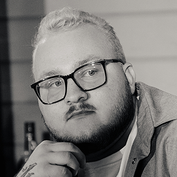
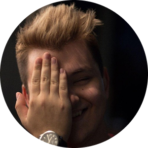
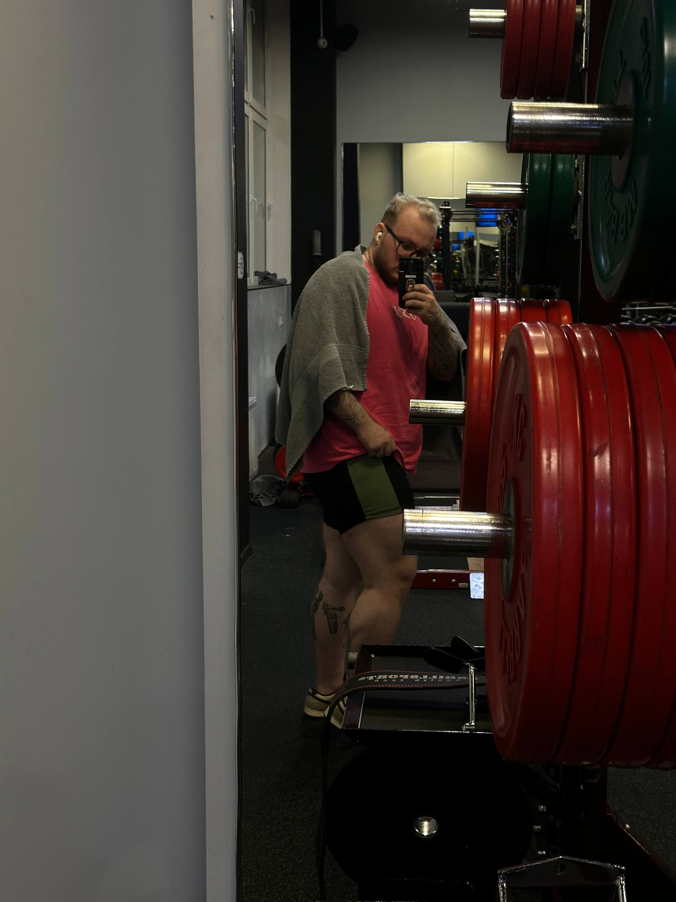
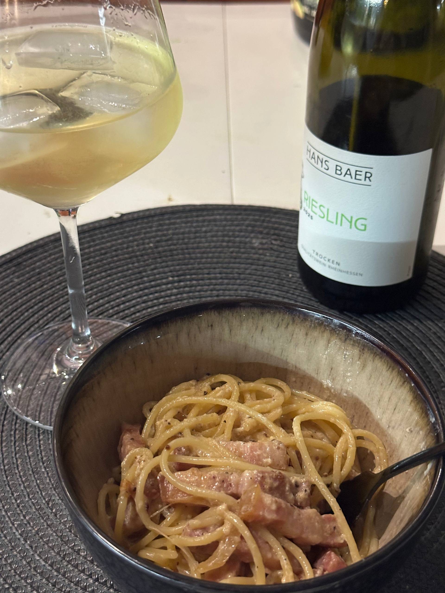
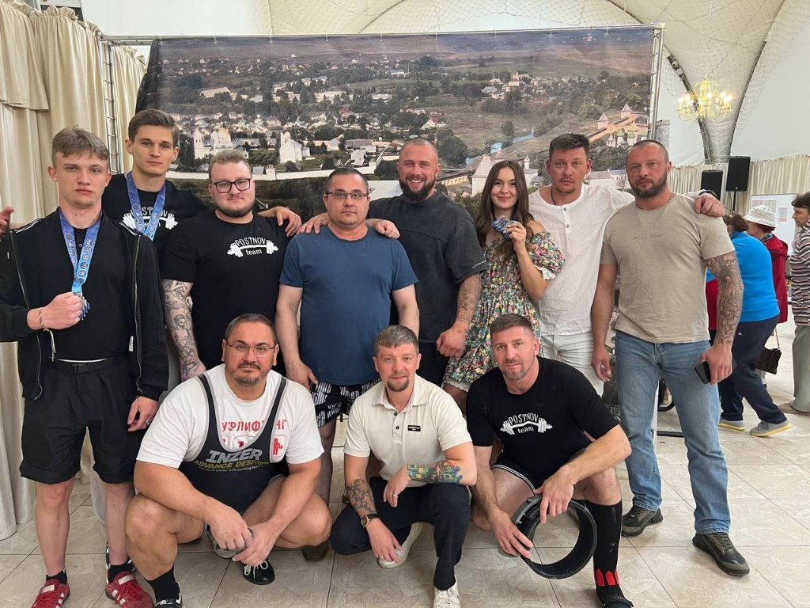
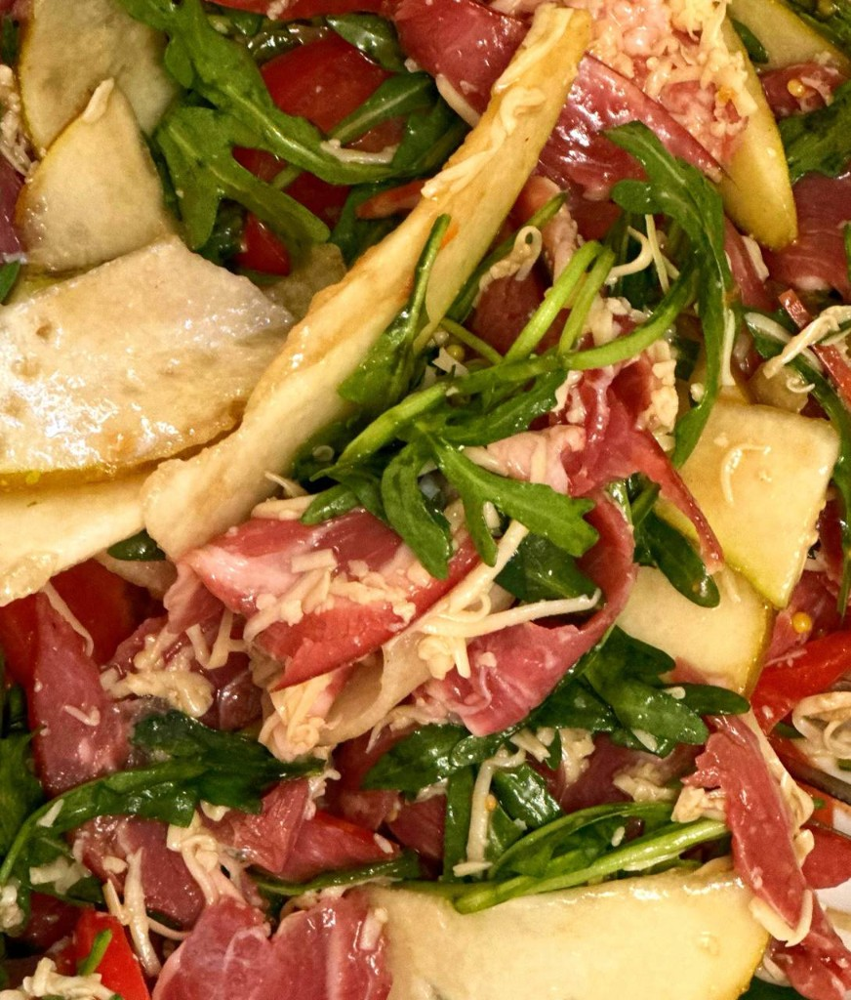
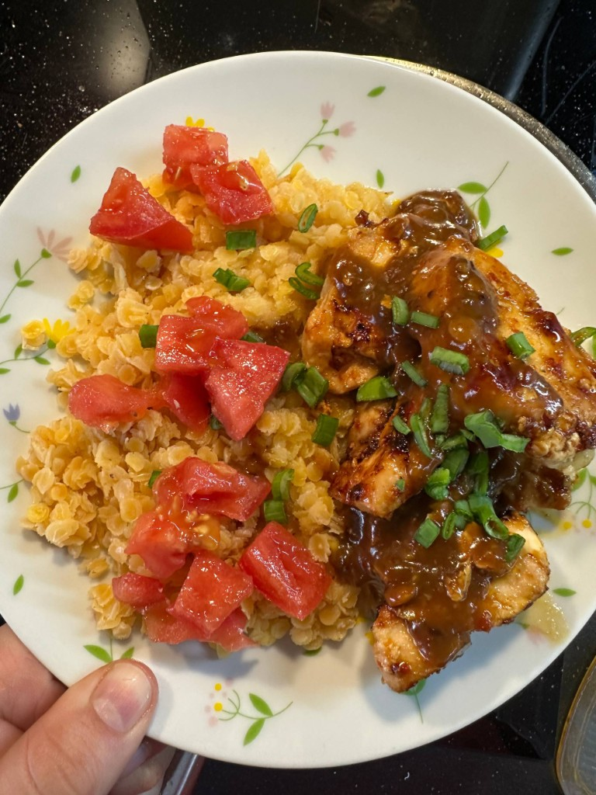
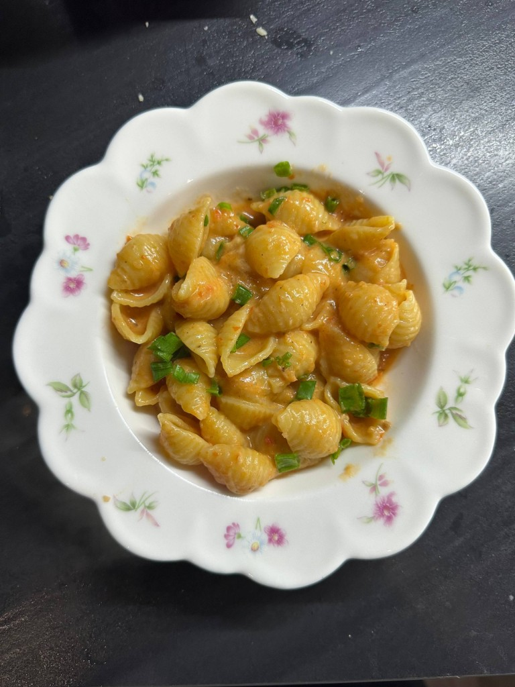
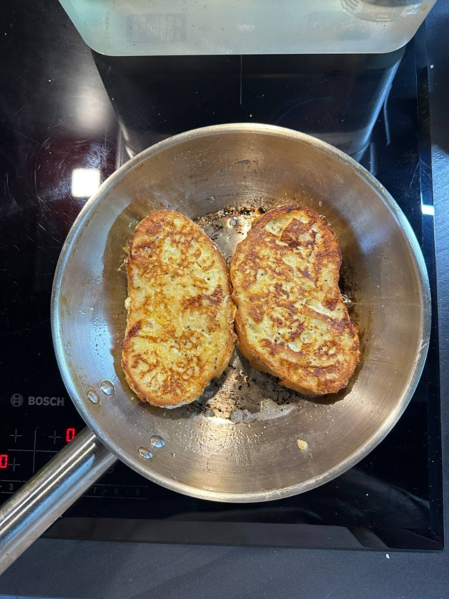

Сергей Нохрин — продуктовый дизайнер

Карьера
- Работал с брендом и восприятием дизайн‑системы
- Проводил встречи и мероприятия для продуктовых дизайнеров
- Зарефакторил основные компоненты дизайн‑системы и проектировал новые
- Провёл ревью более 500 форм в разных библиотеках
- Сократил время на работу с малыми формами с 14 до 11 секунд
- Перепроектировал всю дизайн‑систему 8.5 с учётом редизайна (MVP)
- Спроектировал новый лендинг с упором на data‑driven SEO
- Снизили количество ответов техподдержкой вручную
- Среднюю цену обращения в техподдержку снизил с 1,3 $ до 0,2 $
- Внедрил аллергены и КБЖУ в каталог
- Сделали много полезных фич для водителя‑курьера: автовывод заработка, тепловая карта заказов и др.
- Улучшил флоу работы для администратора груминг‑салона
- Добавили умную систему записи к грумеру, запреты и прививки
- Спроектировал кросс‑платформенный мессенджер
- Внедрили тэговый подход к работе с клиентом по всей системе
- Провёл более 120 пользовательских интервью
- Сократил количество «пустых» нажатий в конструкторе на 41%
- Спроектировал с нуля конструктор обучающих продуктов (инфобиз)
- Руководил доработкой системы Портал ЕАСУЗ для граждан
- Увеличили количество тендерных заявок через наш агрегатор в 2,3 раза
- Улучшали внутренние метрики (обращения в ТП, количество ошибочных заполнений, количество отклонений)
- Worked on the design system brand and perception
- Ran meetings and events for product designers
- Refactored core design system components and designed new ones
- Conducted a review of over 500 forms across various libraries
- Reduced time spent on small forms from 14 to 11 seconds
- Redesigned the entire 8.5 design system taking into account the redesign (MVP)
- Designed a new landing page with a focus on data-driven SEO
- Reduced the number of manual tech support responses
- Reduced the average cost of tech support inquiries from 1.3 $ to 0.2 $
- Implemented allergens and nutritional info in the catalog
- Added many useful features for driver-couriers, such as auto-earnings withdrawal, order heatmap, and more.
- Improved the admin flow for grooming salon administrators
- Added a smart booking system for groomers, bans, and vaccinations
- Designed a cross-platform messenger
- Implemented a tagging approach to working with clients across the system
- Conducted over 120 user interviews
- Reduced the number of "empty" clicks in the constructor by 41%
- Designed a constructor for educational products from scratch (infobusiness)
- Led the refinement of the EARSUZ Portal system for citizens
- Increased the number of tender applications through our aggregator by 2.3 times
- Improved internal metrics (tech support inquiries, erroneous submissions, rejections)
Я делал
Нейродвиж
пробую новые инструменты, чтобы быстрее собирать прототипы, проверять больше идей и уделять больше внимания деталям.


Ещё немного визуала
Рекомендации коллег
Нохрин Сергей работал под моим руководством как Senior Product Designer в команде Operations в ToYou (Aram Meem LLC). За почти два года работы с нами Сергей постоянно демонстрировал высокий уровень профессионализма, креативности и вовлечённости в создание пользовательских решений. Его работа заметно повлияла как на внутренние операционные процессы, так и на общий пользовательский опыт. Он был активным сторонником подхода, что улучшение UX внутренних систем напрямую усиливает клиентский опыт (CX), и последовательно применял это на практике.
Одна из ключевых сильных сторон Сергея — глубокое техническое понимание того, как работает продукт «под капотом», благодаря чему взаимодействие с разработчиками было особенно эффективным. Многие инженеры отмечали, насколько легко и приятно работать с его макетами: они были понятными, последовательными и технически реализуемыми. Это редкое сочетание сильного дизайна, технического бэкграунда и понимания бизнеса сделало Сергея важным мостом между дизайном, разработкой и продуктом. Кроме того, у Сергея отлично развита эмпатия к пользователям — будь то курьер на линии или специалист поддержки, разбирающийся со сложной заявкой. Его способность учитывать потребности разных групп пользователей значительно усилила общий UX продукта.
Его коммуникативные навыки и внимательное отношение к обратной связи сделали Сергея очень уважаемым и ценным членом команды. Команда до сих пор вспоминает его и результаты его работы. Уверена, что Сергей принесёт такой же высокий уровень экспертизы и профессионализма в любую компанию, к которой присоединится.

Я с удовольствием рекомендую Сергея Нохрина, который почти два года работал Senior Product Designer в ToYou (Aram Meem LLC). За это время мы плотно сотрудничали в команде BX (Business Experience).
Мы вместе делали довольно сложные фичи, особенно вокруг продуктового каталога, и вклад Сергея был критически важен для их успеха. У него есть редкий навык — превращать сложные требования в дизайны, которые одновременно и понятны пользователю, и удобны для разработки. Разработчики в команде не раз отмечали, насколько легко реализовывать его решения: всё структурировано, логично и технически выполнимо.
На самом деле, даже сейчас, когда мы работаем над новыми задачами, в команде до сих пор звучат фразы вроде: «Сергей бы это классно сделал» или «Вот это — прям история уровня Сергея». Его планка по качеству работы до сих пор задаёт ориентир, и влияние его вклада ощутимо до сих пор.
Sergey Nokhrin worked under my leadership as Senior Product Designer on the Operations team at ToYou (Aram Meem LLC). For almost two years he consistently showed strong professionalism, creativity, and commitment to user-centered solutions. His work impacted both internal operations and the overall user experience. He championed the idea that improving UX for internal tools directly strengthens customer experience (CX) and applied it in practice.
One of Sergey’s strongest strengths is deep technical understanding of how the product works “under the hood,” which made collaboration with engineering especially effective. Engineers often said his designs were easy to understand, consistent, and feasible to build—a rare mix of design craft, technical background, and business sense that made him a bridge between design, engineering, and product. He also has strong empathy for users—whether a courier on the line or a support specialist handling a tricky ticket.
His communication skills and openness to feedback made him a valued teammate. The team still remembers him and his work. I am confident he will bring the same level of expertise to any company he joins.
I’m happy to recommend Sergey Nokhrin, who worked for almost two years as Senior Product Designer at ToYou (Aram Meem LLC). We collaborated closely on the BX (Business Experience) team.
We shipped complex features together, especially around the product catalog, and Sergey’s contribution was critical. He has a rare skill: turning complex requirements into designs that are clear for users and practical for developers. Developers repeatedly noted how straightforward his work was to implement—structured, logical, and technically sound.
Even on new work, people still say things like “Sergey would have nailed this” or “that’s Sergey-level quality.” His bar for quality remains a reference point.
Хобби






